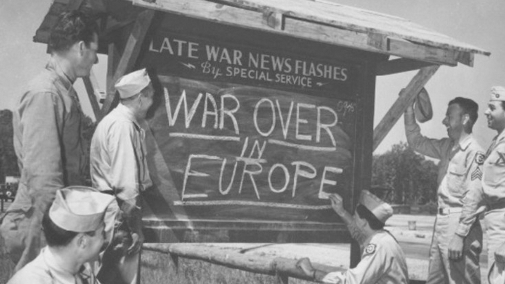

Before Fusion: EU
Identified: March 11th, 2024
To be published: March 15th, 2024
Europe has been at near constant warfare for the entire history of its civilization right until the end of World War II. Can it stay free of deadly and maiming conflict in the face of increasing unifying (whole of) North America, economically influential China and likely soon to be "sovereign" CIS?